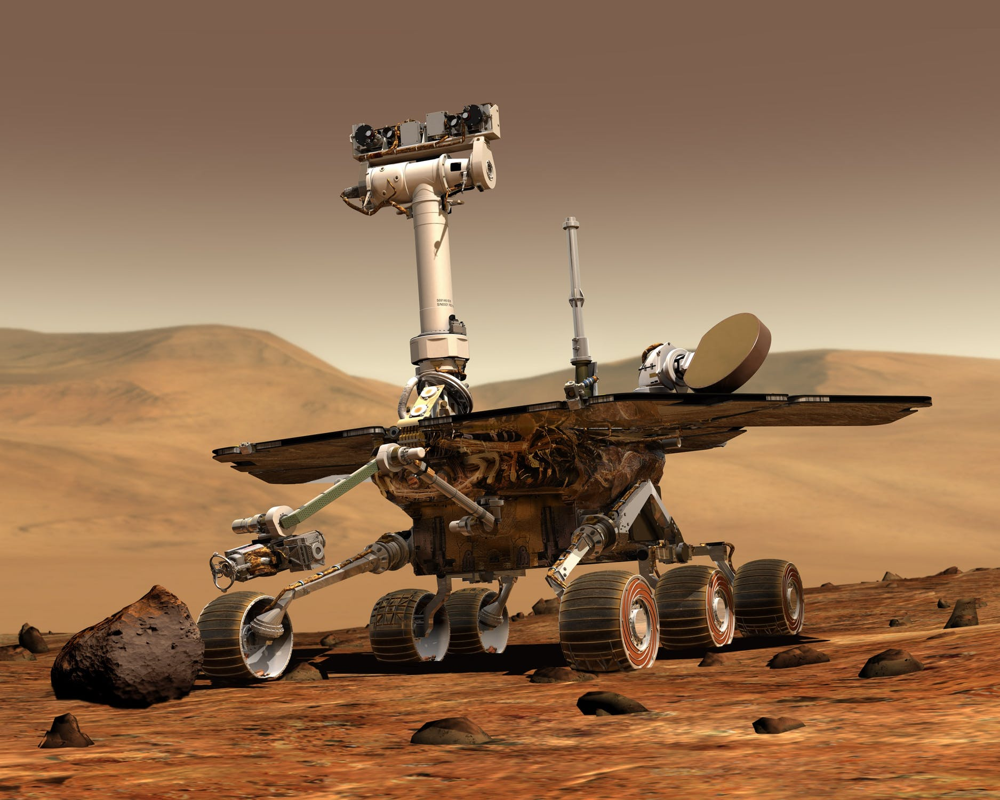
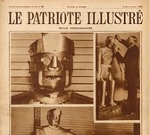
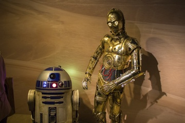

Zgodovina robotike in zakaj jo potrebuje svet
Besedo robot si je leta 1920 izmislil češki dramski pisatelj znanstvene fantastike Karel Čapek in jo uporabil v svoji igri Rossumovi univerzalni roboti. V češčini »robota« pomeni »delo« oziroma »suženj«. Avtomatizacija oziroma uvajanje samodejnega izvrševanja zahtevnih nalog brez posega človeka se je v industriji začela z obdelovalnimi avtomati, ki so z mehansko izvedeno logiko svojo funkcijo izvajali samodejno. S prihodom elektronike in pozneje računalnikov so se avtomati prelevili v sodobne računalniško vodene obdelovalne stroje, ki so jih manevrirali po svojih potrebah n željah. . Razvoj robotike se je pričel v avtomobilski industriji, zdaj pa si skoraj ne moremo več predstavljati industrijske panoge, ki bi nemoteno delovala brez robotske podpore. Osnovni razlogi za avtomatizacijo so zniževanje stroškov, razbremenitev človeka ter zagotavljanje zmogljivosti in kakovosti proizvodnje. Avtomatizacija vpliva na skrajšan čas izdelave, večjo zmogljivost in zniževanje proizvodnih stroškov. Poleg tega je primerna za dela kjer bi bilo človekovo zdravje lahko ogroženo. Eden izmed ključnih razlogov je bilo tudi dejstvo, da nekaterih nalog z ročnim delom in človeškimi zmožnostmi ni bilo mogoče več učinkovito izvrševati. Zaradi teh lastnosti so roboti že skoraj popolnoma prevzeli področje barvanja, varjenja in tako dalje v industriji, kjer je poleg kakovosti pomembno predvsem zdravje človeka. Pri sestavljanju robotizacija zagotavlja čase izdelave in ustrezno kakovost, ki jih človek z ročnim delom ne more več doseči. k pojmovanju robotike so pripomogli tudi številni znanstveno fantastični filmi kot je na primer vojna zvezd.




